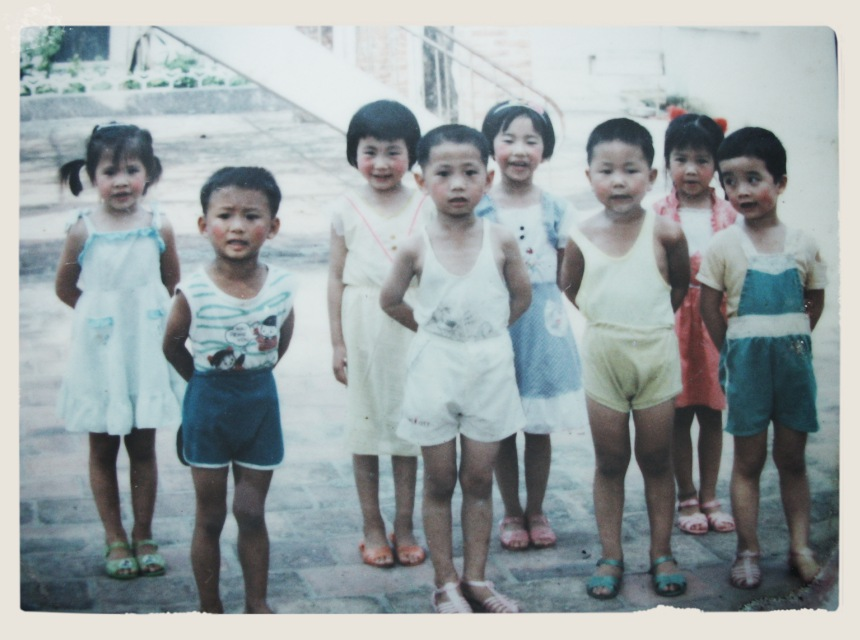

新春期间，来广州省城过年的爸爸跟我说，厂里我的一位同龄老友，去年因车祸去世了。我才想到原来和那位朋友又有几年不见了。而在此两个月前，爷爷也刚刚去世，是我家里四位老人第一个离开的。 在我们这个年龄，失去身边的亲人和朋友，几乎是每个人都不可避免的了。这时来的“失去”，已经不像我十多年前经历的“失去”那么悲痛，心里更多的是在时间流逝面前的无力感。我们每天都在失去，成为一种惯性，失去以前的某些状态和关系。在我们这个年龄，大多开始有自己的家庭，有自己的工作，有自己的生活要去打拼维持。彼此早已疏于联络，但其实也向往，某天不经意的旧友重逢的意外喜悦，现在只是没有这个机会了。
我自己早已明白，任何东西，最终都会逝去。年轻的时候，会觉得以后世界是属于年轻一辈去大展身手的。现在没太多这方面的想法了，越发觉得把时间花在自己内心真正在意的事情上，更为重要。这一趟与世界相遇的人生之旅，是多么短暂和珍贵。去年自己选择追随内心离开了大公司，之后短短的半年，过得比之前开心充实得多。
大部分的人都能明白那些简单的人生道理，而做到的不多。被社会，环境，亲人，虚荣束缚是常态。谁也不知道自己人生还有多少日子，那些目光短浅的庸人自扰问题，却还在侵蚀着大家珍贵的时间。 2015已经来了，从前时间慢，而当下时间飞逝的速度却那么快。新的一年多多自省。
